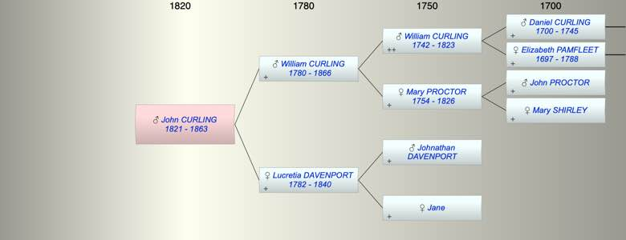

| [Index] |
| John CURLING (1821 - 1863) |
|  |
| b. 28 Apr 1821 at City of London |
| d. 1863 at Denmark Hill, London aged 42 |
| Parents: |
| William CURLING (1780 - 1866) |
| Lucretia DAVENPORT (1782 - 1840) |
| Siblings (5): |
| James CURLING (1808 - 1858) |
| Jane CURLING (1810 - ) |
| Mary CURLING (1812 - 1876) |
| Sarah CURLING (1814 - 1897) |
| Martha CURLING (1816 - 1898) |
| Events in John CURLING (1821 - 1863)'s life | |||||
| Date | Age | Event | Place | Notes | Src |
| 28 Apr 1821 | John CURLING was born | City of London | Note 1 | ||
| 1840 | 19 | Death of mother Lucretia DAVENPORT (aged 58) | Denmark Hill, Lambeth | Note 2 | |
| 1863 | 42 | John CURLING died | Denmark Hill, London | Note 3 | |
| Personal Notes: |
| Freeman of City by Patrimony 12 May 1842 son of William |
| Created on a Mac™ using iFamily for Mac™ on 8 Oct 2023 |